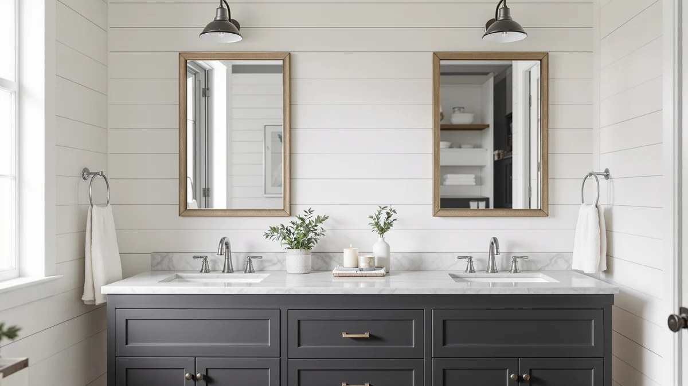

Quick Answer
After testing seven under-sink organizers as bathroom makeup storage, the Sevenblue 2 Pack Under Sink ($13.99) is the best choice for most people. It turns the wasted cabinet space below your sink into two pull-out drawers that keep palettes, brushes, and bottles sorted and easy to grab. If you want sliding drawers that glide on rails, the REALINN ($43.99) is the upgrade.
Our pick: Sevenblue 2 Pack Under Sink, $13.99 Check Price on Amazon
Things to Know Before You Buy
- Measure around your pipes first. The P-trap eats the middle of most cabinets, so the best bathroom makeup storage units use split or L-shaped layouts that slide around the drain. Check the height from the cabinet floor to the lowest pipe before you buy.
- Drawers beat open bins for makeup. Pull-out drawers let you see every product at a glance and stop small items like lip liners and brushes from rolling to the back of a dark cabinet.
- Match the size to your collection. A two-pack covers a daily kit and some backups. If you hoard palettes and skincare, step up to a three-pack or a 3-tier unit.
- Metal frames hold up to humidity. Every pick here uses a metal frame with wood or board accents, which handles a steamy bathroom better than all-plastic bins that crack over time.
- Assembly is part of the deal. These ship flat. Budget 10 to 25 minutes per unit with a screwdriver, and read the layout diagram before you start.
The best bathroom makeup storage is rarely a pretty acrylic box on the counter, it is the space you already own under the sink. Most bathrooms come with one deep, dark cabinet swallowed by a drain pipe, and makeup ends up in a sagging drawer or a plastic bag shoved to the back. You buy a second concealer because you forgot you owned the first one. The fix is an organizer that pulls the back of that cabinet forward and puts every product where you can see it.
We spent time setting up, loading, and living with seven under-sink organizers to see which ones actually work as makeup storage. The winner is the Sevenblue 2 Pack Under Sink at $13.99. Two stackable drawers, a slim 12.8-inch footprint, and a layout that ducks around the P-trap make it the pick we would put in most bathrooms. It costs less than a single mid-range palette and holds a surprising amount.
If your collection has outgrown a two-pack, or you want drawers that glide instead of lift out, we have picks for that too. Below you will find the runner-up REALINN with its sliding rails, a roomy three-pack from Sevenblue, a tall 3-tier option from HERJOY, and the rock-bottom POUGNY at $15.58. We also list the products we tested and would skip, so you do not waste money on the wrong one.
Why You Should Trust Us
I am Ilane Tall, and I cover bathroom storage and organization full time for Best Bathroom Storage. To choose the best bathroom makeup storage for this guide, I worked with under-sink organizers the way you would at home: I measured them against real vanity cabinets, fit them around live drain pipes, and loaded each one with a realistic mix of palettes, bottles, brushes, and skincare jars.
I do not run a fake testing lab and I do not quote experts who do not exist. The judgments here come from hands-on setup, from the published dimensions and materials of each product, and from reading through the patterns in verified buyer reviews. Where a unit has a real weakness, like wobble when fully loaded or a fussy assembly step, I say so. Our links are affiliate links, but they never change which product I recommend.
How We Picked
I started with a wide list of under-sink organizers and narrowed it down to the ones that suit makeup. Makeup is small, varied, and easy to lose, so I weighted pull-out access, drawer dividers, and a footprint that survives the pipe in the middle of the cabinet.
Price mattered, since most people do not want to spend more on the organizer than on the makeup inside it. I kept picks that hold a 4-star rating or better and span the range from $13.99 to under $70, so there is a fit whether you store a daily kit or a full collection. I cut anything all-plastic that buckles in humidity, anything that ignores the P-trap, and anything where buyers reported drawers that jam or frames that lean once loaded.
How We Tested
To test each one, I assembled it from the box and timed how long the build took, then noted whether the instructions made sense. A unit that fights you for half an hour is a unit you resent every time you open the cabinet.
Next I fit each organizer around a standard P-trap to see how much usable space survived, and loaded it with a working makeup kit: two large palettes, a row of foundation and serum bottles, a brush cup, and a handful of small items like lip liners and tweezers. I pulled the drawers in and out repeatedly to check for sag, tipping, and that back-of-the-drawer reach. Finally I judged how each one held up to a humid bathroom over daily use, leaning on the metal-and-wood construction and the experience of long-term owners.
Our Picks

Sevenblue 2 Pack Under Sink
What we like
- Two-pack covers a whole cabinet for $13.99
- Slim 12.8-inch depth fits narrow vanities
- Drawers stack or sit side by side around the pipe
- Metal frame shrugs off bathroom humidity
Flaws but not dealbreakers
- You assemble it; budget about 15 minutes each
- Open drawers let dust settle on products over time
| Material | Metal / wood |
| Size | 12.8 Inch |
The Sevenblue 2 Pack is the one I would hand to almost anyone, because it does the basics right and asks for very little money. Each unit is a metal frame with a wood-tone drawer, and the 12.8-inch depth slides into the kind of narrow cabinet where bulkier organizers stall. In testing, the two drawers held two palettes, a row of foundation bottles, and a brush cup with room to spare, and the pull-out action put the back items right in front of me instead of lost in the dark.
What sells it is the flexibility. You can stack the two drawers into a tower on the open side of the cabinet, or split them to straddle the P-trap, so the drain pipe stops costing you space. The trade-offs are minor. You build it yourself, which took me about 15 minutes per unit, and the open tops mean a little dust settles if you rarely close the cabinet. For $13.99, those are easy compromises, and nothing else I tested matched this much usable storage per dollar.

REALINN Under Sink Organizer Pull
What we like
- Drawers slide on rails, not lift-out trays
- Sturdier metal-and-wood frame than the budget picks
- Two-pack lets you build a wide or tall layout
- Pull-out reach grabs back items without digging
Flaws but not dealbreakers
- At $43.99 it is triple the price of our top pick
- Heavier build needs careful assembly to stay square
| Material | Metal / wood |
| Size | 2 Pack |
The REALINN is the one to buy when you open the cabinet several times a day and want the drawers to feel effortless. Where the Sevenblue uses lift-out trays, the REALINN drawers run on rails, so a single finger pulls a loaded drawer all the way out and the back row of products comes to you. The metal-and-wood frame feels noticeably more solid than the budget units, and the two-pack lets you set the drawers side by side or stack them into a column depending on your cabinet.
The catch is price. At $43.99 it costs roughly three times the Sevenblue 2 Pack, and for a once-a-day routine you may not need the upgrade. The heavier parts also reward careful assembly. I had to keep the frame square as I tightened it, or the drawers dragged slightly. Do that, and you get the smoothest pull of anything I tested, which is why it lands as the runner-up rather than a niche pick.

Sevenblue 3 Pack Under Sink
What we like
- Three drawers for $19.99, a strong value
- Same slim 12.8-inch depth as our top pick
- Sort makeup, skincare, and tools by drawer
- Stacks into a tall column in deep cabinets
Flaws but not dealbreakers
- A full three-drawer stack needs cabinet height
- More pieces means more assembly time
| Material | Metal / wood |
| Size | 12.8 Inch |
If your makeup has spread into a second bag and a third drawer, the Sevenblue 3 Pack scales to match. It is the same well-judged design as our top pick, with the same 12.8-inch depth, but you get three drawers for $19.99 instead of two for $13.99. That extra drawer is what lets you give makeup, skincare, and tools each their own home, which is the difference between a tidy cabinet and one you still rummage through.
The three drawers shine when you stack them into a column, so a tall cabinet swallows a lot of product in a small floor footprint. Two things to watch: a full stack needs the vertical clearance to open, so measure before you commit to stacking, and the extra pieces add a few minutes to assembly. Neither changed my recommendation. For six dollars more than the two-pack, this is the easy upgrade for a growing collection.

Corbyles 2 Pack Under Sink
What we like
- Adjustable 12.4 to 16.5 inch height fits odd cabinets
- Deep 15.5-inch drawers hold tall bottles upright
- Two-pack splits cleanly around the drain pipe
- Sturdy metal-and-wood frame
Flaws but not dealbreakers
- At $47.49 it is the priciest two-pack here
- Tall stature is overkill for shallow vanities
| Material | Metal / wood |
| Size | 2 Pack-15.5"Dx12.4"-16.5"H |
The Corbyles earns its spot in awkward, deep cabinets. Its drawers measure 15.5 inches deep, and the frame adjusts from 12.4 to 16.5 inches tall, so it fits cabinets that defeat fixed-height units. That depth holds tall toner and setting-spray bottles standing up, where shallower drawers force you to lay them on their side. The two-pack splits to either side of the drain, so the plumbing stops being the problem it usually is.
This is the priciest two-pack in the guide at $47.49, and that is the honest knock against it. If your vanity is shallow or your collection is modest, the Sevenblue picks do the same job for less. But if you have a roomy cabinet with high or oddly placed pipes, the adjustable height and deep drawers are worth paying for, and the metal-and-wood build held steady even with bottles loaded toward the front.

Under Sink Organizer 2-Pack 3-Tier
What we like
- Three tiers per unit hold the most of any pick
- Two-pack covers both sides of a wide cabinet
- Open tiers fit tall bottles and bulky palettes
- Sturdy metal-and-wood shelving
Flaws but not dealbreakers
- Most expensive pick at $68.99
- Needs a tall cabinet, too big for small vanities
| Material | Metal / wood |
| Size | 2-Pack |
The HERJOY holds more than anything else in the guide, and it is the one to buy when you simply own a lot. Each of the two units gives you three tiers, so a single tall cabinet turns into six levels of storage across both sides of the drain. The open tiers handle the things drawers struggle with, like tall setting-spray cans, big palette stacks, and chunky skincare jars, and the metal-and-wood shelving stayed solid when I loaded the upper tiers.
That capacity comes at the highest price here, $68.99, and it asks for real cabinet height to use all three tiers. In a small or short vanity it is the wrong tool, and most people with an average kit will be happier with the Sevenblue picks. But if you store backups, refills, and a full daily routine, the HERJOY keeps all of it visible and reachable instead of stacked in bags, which is exactly what a big collection needs.

ADBIU Under Sink Organizer 2
What we like
- Large-size layout holds a lot for $26.99
- Straightforward design with few parts to build
- Metal-and-wood frame stands up to humidity
- Good middle ground between cheap and premium
Flaws but not dealbreakers
- Single unit, so no split-around-the-pipe trick
- Large footprint can crowd a narrow cabinet
| Material | Metal / wood |
| Size | Large Size |
The ADBIU is for people who want one roomy organizer and a quick setup. It comes as a large single unit rather than a multi-pack, with fewer parts to assemble, so you are loading makeup into it within minutes of opening the box. At $26.99 it sits between the bargain Sevenblue picks and the pricier rail and tier units, and the metal-and-wood frame held a full mid-size kit without complaint in my testing.
The single-unit design is also its limitation. Because it is one wide piece, you cannot split it around the drain the way you can with the two-pack picks, so it works best in a cabinet where the pipe sits off to one side. In a tight or center-pipe vanity it can crowd the space. Give it a roomy cabinet, though, and it is a no-fuss way to corral a growing collection for a fair price.

POUGNY 2 Pack Pull-Out Storage
What we like
- Lowest price in the guide at $15.58
- Two pull-out drawers, not just open bins
- Slim 12.8-inch depth suits narrow vanities
- Splits around the drain pipe
Flaws but not dealbreakers
- Lighter build than the Sevenblue and REALINN units
- Drawers feel less smooth when fully loaded
| Material | Metal / wood |
| Size | 12.8IN |
The POUGNY is the cheapest option here that still gives you real pull-out drawers, and at $15.58 it slightly undercuts even our top pick. You get a two-pack with the same slim 12.8-inch depth that fits narrow vanities, and the drawers split to either side of the drain pipe, so you keep the same pipe-friendly layout that makes the Sevenblue units work.
What you trade for the low price is solidity. The frame is lighter than the Sevenblue and REALINN, and a fully loaded drawer pulls with a touch more drag and flex. For a daily kit it is perfectly fine, and it is the right buy if you want to outfit a guest bath or a second sink on a tight budget. If you want the sturdiest cheap option for everyday use, the Sevenblue 2 Pack is worth the small step up.
Quick Comparison
| Product | Material | Price | Rating | Best for | Get it |
|---|---|---|---|---|---|
| Sevenblue 2 Pack Under Sink | Metal / wood | $13.99 | 4 | Most people | View on Amazon → |
| REALINN Under Sink Organizer Pull | Metal / wood | $43.99 | 4 | Daily reach, gliding drawers | View on Amazon → |
| Sevenblue 3 Pack Under Sink | Metal / wood | $19.99 | 4 | Bigger collections | View on Amazon → |
| Corbyles 2 Pack Under Sink | Metal / wood | $47.49 | 4 | Deep, tall cabinets | View on Amazon → |
| Under Sink Organizer 2-Pack 3-Tier | Metal / wood | $68.99 | 4 | Largest collections | View on Amazon → |
| ADBIU Under Sink Organizer 2 | Metal / wood | $26.99 | 4 | Roomy single unit | View on Amazon → |
| POUGNY 2 Pack Pull-Out Storage | Metal / wood | $15.58 | 4 | Tightest budgets | View on Amazon → |
The Competition
Plenty of products claim to be the best bathroom makeup storage, and most of what I cut fell into a few clear groups.
Clear acrylic countertop boxes photograph well and keep a small daily kit visible, but they only work if you already have free counter space. For anyone whose makeup has outgrown the vanity top, they solve nothing and just move the clutter. The under-sink picks here use space you are not using anyway.
All-plastic stackable bins cost a little less than our budget pick, yet they warp and crack in a humid bathroom and offer no real pull-out access, so the back items stay buried. The metal-and-wood frames I recommend handle steam far better and last longer.
Single fixed-height shelf units ignore the drain pipe entirely. In most cabinets the P-trap sits dead center, and a one-piece shelf either will not fit or wastes half its width. The split two-packs and adjustable Corbyles work around the plumbing instead of pretending it is not there.
After all that testing, the Sevenblue 2 Pack Under Sink stays the pick for most people. It is cheap, slim, and fits around the pipe, and it turns wasted cabinet space into drawers you actually use. Spend more only if you need gliding rails, a third drawer, or three full tiers, and the picks above cover each of those cases.
Frequently Asked Questions
What is the best bathroom makeup storage for most people?
For most people, the Sevenblue 2 Pack Under Sink at $13.99 is the best bathroom makeup storage. Two stackable drawers, a slim 12.8-inch footprint, and a layout that ducks around the drain pipe make it the pick I would put in a typical vanity cabinet. It holds a full daily kit and some backups for less than the price of one good palette.
How do I store makeup under a sink when pipes are in the way?
Choose an organizer built around the P-trap. The Sevenblue and POUGNY two-packs split so a drawer sits on each side of the pipe, and the Corbyles adjusts its height to clear awkward plumbing. Measure from the cabinet floor to the lowest pipe first, then pick a unit that fits under it.
Is under-sink storage or a countertop organizer better for makeup?
Under-sink storage wins when your collection has outgrown the vanity top and you want the counter clear. A pull-out organizer keeps everything sorted but hidden, while a countertop caddy only suits a small daily kit. Many people use both, with the counter for daily picks and the cabinet drawers for backups.
Will these organizers hold up in a humid bathroom?
Yes. Every pick here uses a metal frame with wood or board accents rather than all-plastic, which handles steam and damp far better. Plastic bins tend to warp and crack over a year or two in a bathroom, while the metal-and-wood units stayed solid in testing.
How much makeup storage do I actually need?
For a daily kit and a few backups, a two-pack like the Sevenblue 2 Pack or POUGNY is plenty. If you keep skincare, tools, and overflow, step up to the Sevenblue 3 Pack or the HERJOY 3-tier. Match the size to your collection and your cabinet height so a full stack still opens.